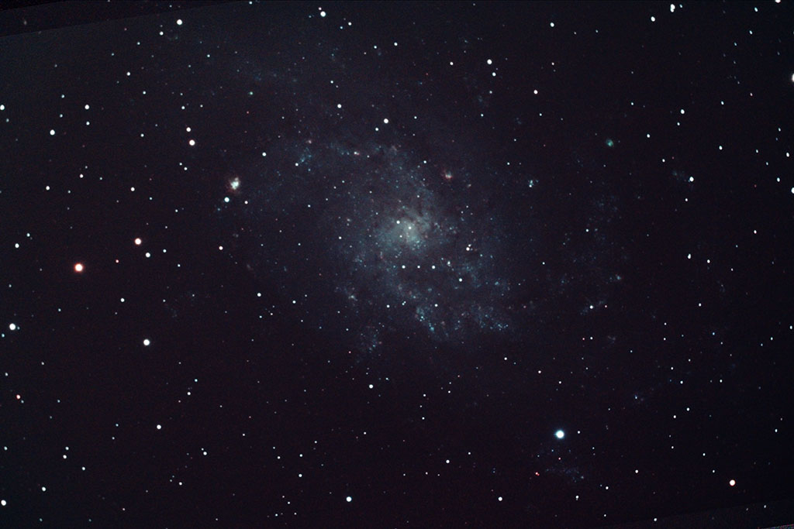

Shot with a Celestron Ultima 8 at prime focus (203 mm), Canon EOS 1100D, LPR filter and f/6,3 focal reducer. 18 best frames (out of 29 due to random wind gusts) of 8 minutes each totalling 2 h 24 m, 400 ISO/ASA
darks, flats, and bias
North is up.
Tracking with PhD with a Starlight Lodestar in OAG, stacking with DSS, processing with CS5 (levels, curves, downsize and JPG conversion)

2013 © Jordi Íñigo Griera | astrosurf.com/jig